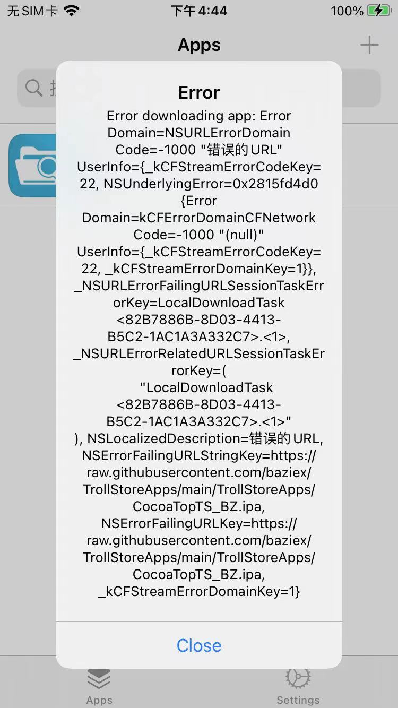
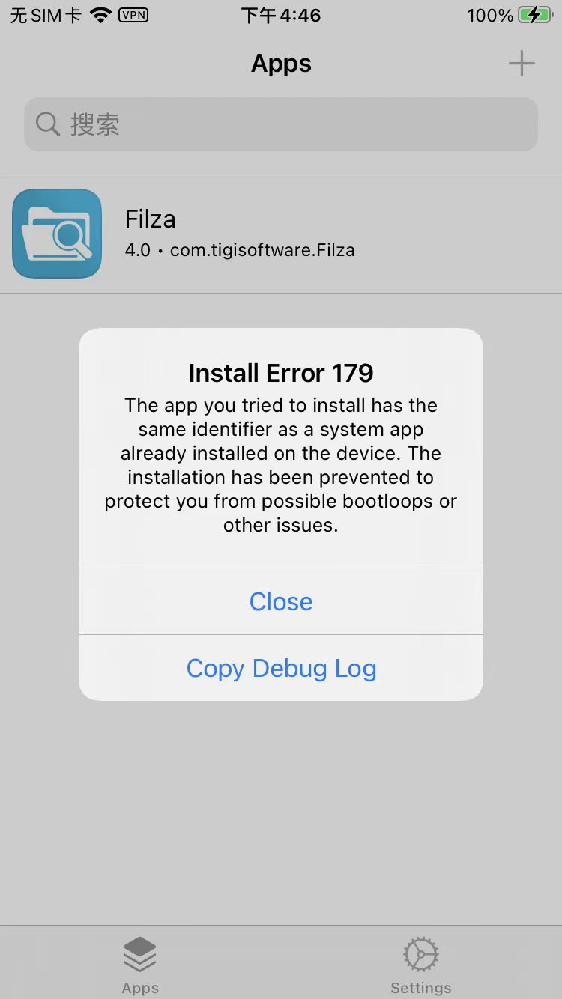

常见错误
下载报错：Error downloading app NSURLErrorDomain Code -1000
如果下载失败：
Error downloading app NSURLErrorDomain Code -1000

解决办法：
需要翻墙，即：用小火箭=Shadowrocket去加上代理，即可顺利下载
安装报错：Install Error 179
安装期间报错：

Install Error 179
The app you tried to install has the same identifier as a system app already installed on the device. The installation has been prevented toprotect you from possible bootloops or other issues.
拷贝出错误log是：
2023-06-06 16:46:15.983 trollstorehelper[1580:213444] trollstorehelper invoked with arguments: (
install,
custom,
"/private/var/mobile/Containers/Data/Application/77E3DAB5-089E-4290-A188-DFD31986F1DC/tmp/tmp.ipa"
)
2023-06-06 16:46:16.003 trollstorehelper[1580:213444] [installApp force = 0]
2023-06-06 16:46:16.022 trollstorehelper[1580:213444] trollstorehelper returning 179
- 原因：之前安装过，另外一个（异常无法打开的CocoaTop）
- 解决办法：卸载掉之前安装的CocoaTop
- 具体步骤：
dpkg -r ru.domo.cocoatop64- 注
- 等价于
dpkg --remove ru.domo.cocoatop64
- 等价于
- 注